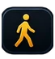
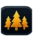

Holes are parks, paths and drives are streets, course buildings are houses. Build tools live on the left rail; reports, money and views live in the top bar. Each tool has one panel and one collapsible More options drawer (never a third level).
SelectV
Click anything: its card opens in the panel. Pan, zoom, inspect.
Always
Hole card: par, length, grow-in, quality, checks with Fix, money
Edit shape · Move · Delete
Path, building, car, junction cards
Land block: Buy this block
Remove · X
Paths, roads, buildings, trees, props
surfaces: Erase in Holes (Alt) · holes: Delete on the card
HolesC
Each hole is a park: rough it in with New hole, shape it in 1 m cells.
Beginner
New hole: tee, green, handles, Build
Shape by hand: Fairway · Green · Tee
Sizes 1 · 2×2 · 3×3 · 4×4 · Erase (Alt)
Your holes: badges, par, state
After hole 1
Rough · Bunker · Water
More options
Fill: Brush · Box · Lasso · Stamps
Over others · Which hole · Seed or sod
Fescue, waste · round brush · stripes · collars · ground height · saved holes

Paths
P
The streets: cart paths for golfers, drives for cars. Drawn like roads.
Beginner
Cart paths: walking path · dirt
Drives: gravel drive
Draw · Upgrade (in place) · snaps to greens, tees, fronts, roads
After hole 1
Cement slab path
Tour levels
Paved path (2) · paved drive (2) · avenues (3)
More options
Trees / median variants · 45° or 90° bends · replace · don't join · downgrade
BuildingsB
The houses: they face a drive or path and snap to it.
Beginner
Course: Clubhouse (one only)
After hole 1 / the clubhouse
Pro shop · cart barn · halfway house (9 holes)
Invited by the tour
Tournament tab: tents, stands, gates, toilets (rent or buy)
Later (G9)
Homes tab: the course's own houses
More options
Free turn · no snap · show catchments

Landscape
L
Trees and gardens that frame the holes.
After hole 1
Trees · shrubs · flower beds (brushes)
Pine straw · mulch (cell surfaces)
More options
Plant picks · spacing · sizes
Decor ground (the old Paint tool: plazas, paving, free shapes)
RoadsR
The town's streets around your course.
Invited (or 3 holes)
Build · Upgrade · Downgrade
Junctions tab (lights, roundabouts)
TransportT
Invited (or 3 holes)
Car parks · shuttle routes · pay plaza
the range's car park meets tier 1
Top bar: where you are, what you have
Season chip: "Founding season · 3 of 9 holes" or "Club Championship in 4 months" · click: the tour card (needs checklist with Fix buttons, the course report: holes, quality, upkeep, care)
Money: the budget · speed · Next season (skip) · View ▾ · Settings · Help
Gone from the top bar: Course, Land, Holes, Event, Grass, All tools, Skip label changes
View ▾ (overlays, any tool)
Map grid (G) · Land for sale (prices on blocks) · Course plan (flat colours, numbers, lines) · Traffic (F) · Grass health · Golfer moods (later)
A tool may open its overlay itself: Paths shows the plan; a refused brush offers Land for sale
Settings
Show every tool now (for experienced players) · Effects and motion · Shadows · Night · Developer (F3)
Old saves open with every tool, as today